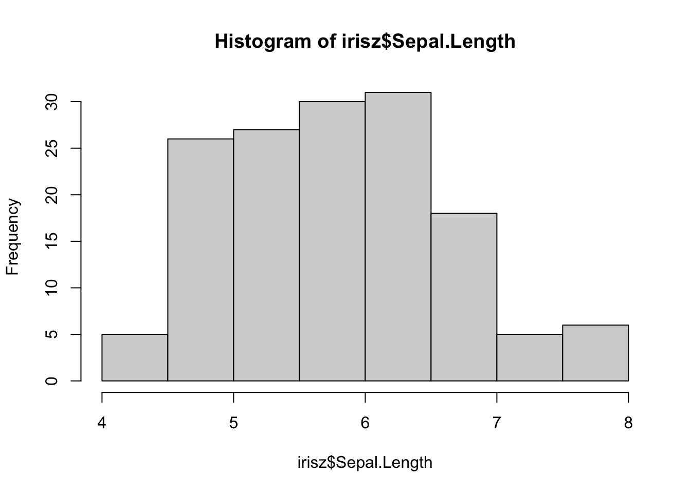
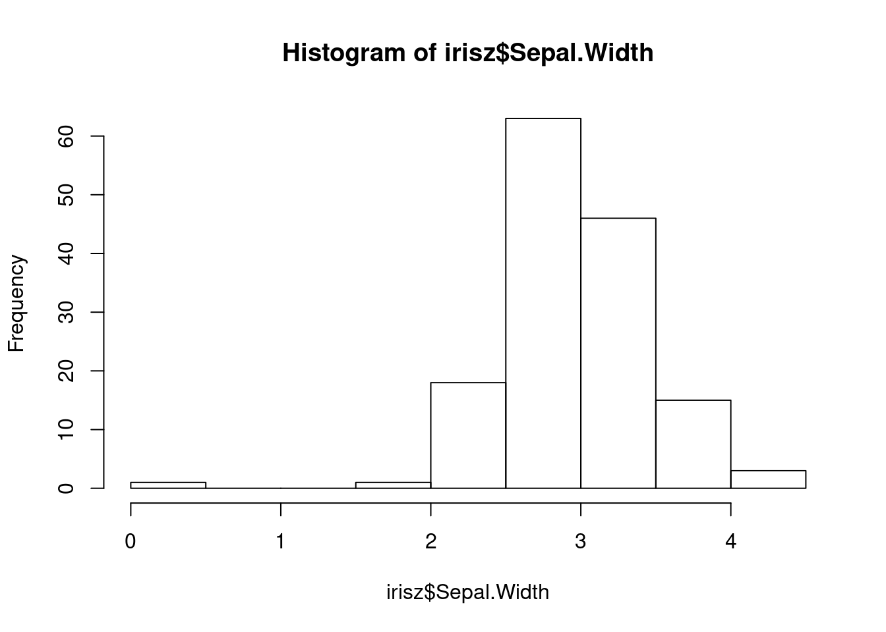
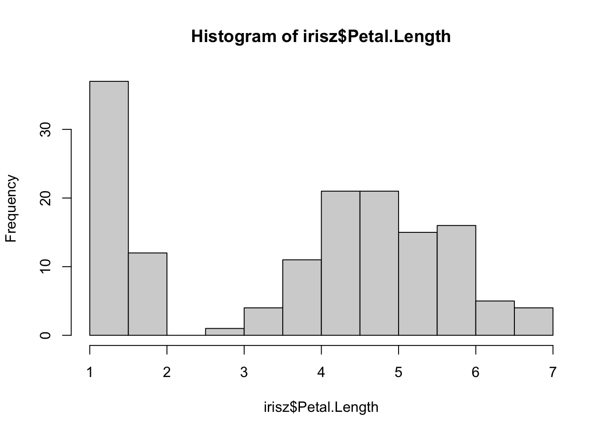
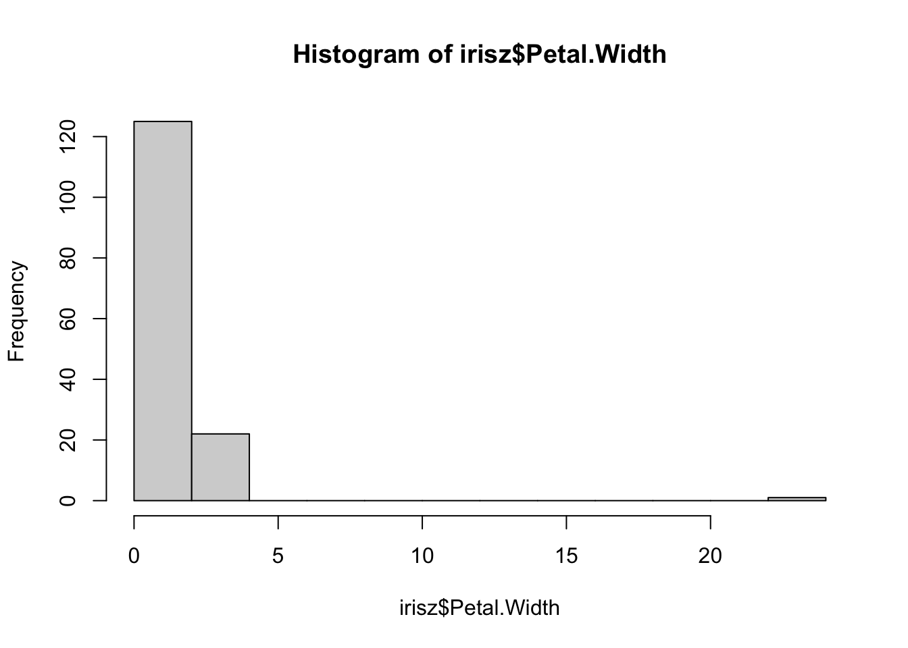
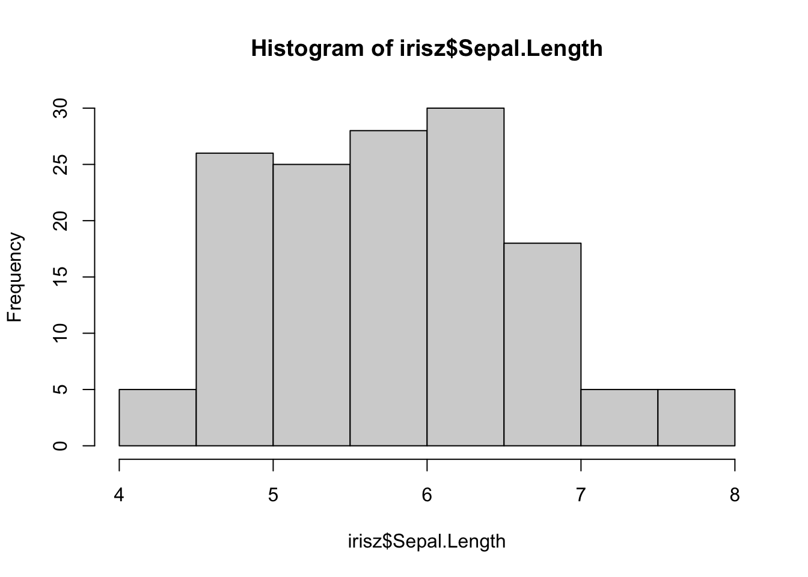
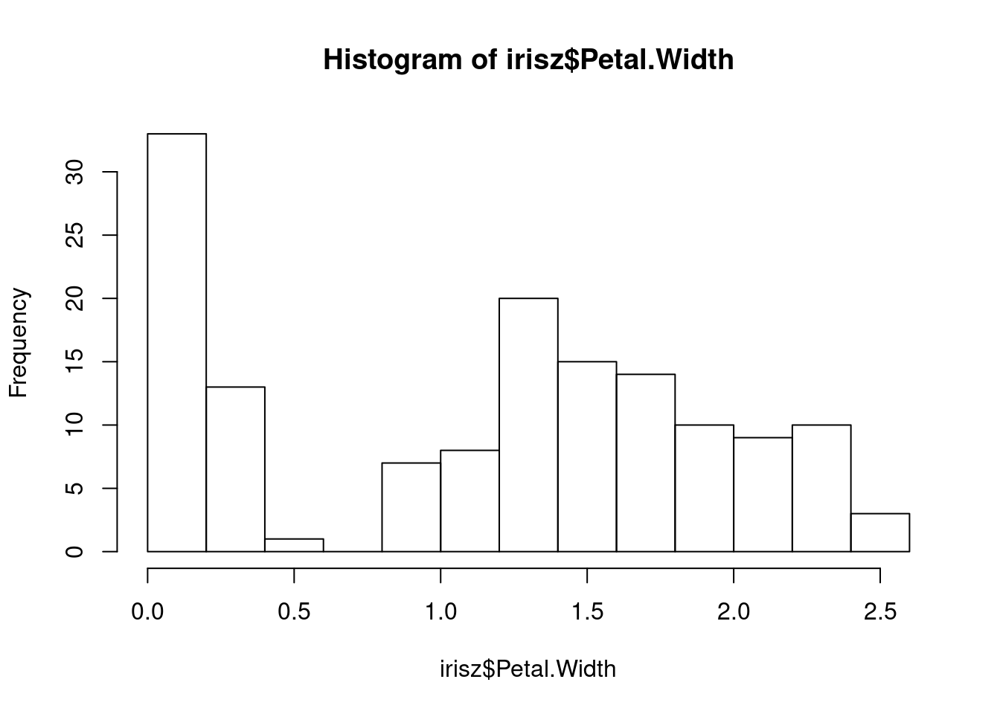
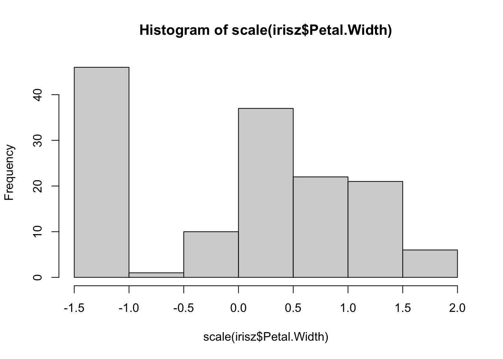

2.1 Reading and processing data
So far, we have largely used data that was already provided to us in base R or through the tidyverse packages. In reality, you will be working with data that comes from a file containing measurements collected by a researcher.
2.1.1 Loading a file into R
There are multiple file types that can be read into R. The most common one is the csv file extension, though txt files also work. You can read in Excel files using additional packages such as the readxl library.
Let’s practice reading in data using the read.csv function.
?read.csvThe repository for this site has a folder called data that contains a file called iris.csv, which is simply the original iris dataset with some modifications. We read in this data and save it to a variable named irisz (worksheet task 3.1.1A).
irisz <- read.csv("data/iris.csv")
head(irisz)## Sepal.Length Sepal.Width Petal.Length Petal.Width Species Location
## 1 5.1 3.5 1.4 0.2 setosa Korea
## 2 4.9 3 1.4 0.2 setosa China
## 3 4.7 3.2 1.3 0.2 setosa Korea
## 4 4.6 3.1 1.5 0.2 setosa China
## 5 5 3.6 1.4 0.2 setosa China
## 6 5.4 1.7 0.4 setosa CanadaYou can already see there are some differences compared to the original iris dataset, such as missing data and an additional column of information. You can see there is also a difference in how certain columns are handled.
head(iris$Species)## [1] setosa setosa setosa setosa setosa setosa
## Levels: setosa versicolor virginicahead(irisz$Species)## [1] "setosa" "setosa" "setosa" "setosa" "setosa" "setosa"For example, here it is clear that our data we read from a csv file is not treating species as categorical information. We can toggle a setting called stringsAsFactors that will turn these character string inputs into factors when the file is loaded into R.
irisz <- read.csv("data/iris.csv", stringsAsFactors = TRUE)
head(irisz$Species)## [1] setosa setosa setosa setosa setosa setosa
## Levels: setosa versicolor virginicahead(irisz$Location)## [1] Korea China Korea China China Canada
## Levels: Canada China Japan Korea Russia USAIf we did not want to reload our data from a file, we can also transform columns (i.e. vectors) in our dataframe to be different types. For example, we could use irisz$Species <- as.factor(irisz$Species) to turn it into a factor after it has already been loaded. There are similar functions like as.numeric, as.character, and as.logical that you may use to transform data types. Be aware though that certain conversions may lead to issues and loss of data!
Now both of these columns are being treated as categorical data. There are other settings we can change, such as providing different names for the columns (worksheet task 3.1.1B).
irisz <- read.csv("data/iris.csv", col.names = c("sep_len", "sep_wid", "pet_len", "pet_wid", "species", "loc"))
head(irisz)## sep_len sep_wid pet_len pet_wid species loc
## 1 5.1 3.5 1.4 0.2 setosa Korea
## 2 4.9 3 1.4 0.2 setosa China
## 3 4.7 3.2 1.3 0.2 setosa Korea
## 4 4.6 3.1 1.5 0.2 setosa China
## 5 5 3.6 1.4 0.2 setosa China
## 6 5.4 1.7 0.4 setosa Canada2.1.2 Handling issues in data
Now that we have loaded in the data, we should preview it and look for any possible issues. You never know what can go wrong in the data pipeline: data can be recorded incorrectly or corrupted at any point in the process.
str(irisz)## 'data.frame': 150 obs. of 6 variables:
## $ sep_len: chr "5.1" "4.9" "4.7" "4.6" ...
## $ sep_wid: chr "3.5" "3" "3.2" "3.1" ...
## $ pet_len: chr "1.4" "1.4" "1.3" "1.5" ...
## $ pet_wid: chr "0.2" "0.2" "0.2" "0.2" ...
## $ species: chr "setosa" "setosa" "setosa" "setosa" ...
## $ loc : chr "Korea" "China" "Korea" "China" ...summary(irisz)## sep_len sep_wid pet_len pet_wid
## Length:150 Length:150 Length:150 Length:150
## Class :character Class :character Class :character Class :character
## Mode :character Mode :character Mode :character Mode :character
## species loc
## Length:150 Length:150
## Class :character Class :character
## Mode :character Mode :characterOne immediate issue you can spot here is that all variables are being treated as character strings. We would expect that sepal length/width and petal length/width would be numeric variables. To inspect what might be happening, we can look at the unique elements in one of these columns using the unique function.
unique(irisz$sep_len)## [1] "5.1" "4.9" "4.7" "4.6" "5" "5.4" "4.4" "4.8" "4.3" "5.8" "5.7" "5.2"
## [13] "5.5" "4.5" "n/a" "5.3" "7" "6.4" "6.9" "6.5" "6.3" "6.6" "5.9" "6"
## [25] "6.1" "5.6" "6.7" "6.2" "6.8" "7.1" "7.6" " " "7.2" "7.7" "7.4" "7.9"Looking at this, we can find the culprit for why these values are treated as a string. There are some entries that are simply a blank space "" and there are missing data encoded as "n/a" in this dataset.
The read.csv function has a nice way to deal with this, specifically the argument na.strings that takes options for elements that might be present in the loaded data that should be treated as an NA (worksheet tasks 3.1.2A through worksheet task 3.1.2D).
irisz <- read.csv("data/iris.csv", na.strings = c("", "n/a"), stringsAsFactors = TRUE)
str(irisz)## 'data.frame': 150 obs. of 6 variables:
## $ Sepal.Length: num 5.1 4.9 4.7 4.6 5 5.4 4.6 5 4.4 4.9 ...
## $ Sepal.Width : num 3.5 3 3.2 3.1 3.6 NA 3.4 3.4 2.9 3.1 ...
## $ Petal.Length: num 1.4 1.4 1.3 1.5 1.4 1.7 1.4 1.5 1.4 1.5 ...
## $ Petal.Width : num 0.2 0.2 0.2 0.2 0.2 0.4 0.3 0.2 0.2 0.1 ...
## $ Species : Factor w/ 3 levels "setosa","versicolor",..: 1 1 1 1 1 1 1 NA 1 1 ...
## $ Location : Factor w/ 6 levels "Canada","China",..: 4 2 4 2 2 1 2 2 5 3 ...summary(irisz)## Sepal.Length Sepal.Width Petal.Length Petal.Width
## Min. :4.300 Min. :0.350 Min. :1.000 Min. : 0.100
## 1st Qu.:5.100 1st Qu.:2.800 1st Qu.:1.550 1st Qu.: 0.300
## Median :5.800 Median :3.000 Median :4.300 Median : 1.300
## Mean :5.839 Mean :3.028 Mean :3.752 Mean : 1.331
## 3rd Qu.:6.400 3rd Qu.:3.300 3rd Qu.:5.100 3rd Qu.: 1.800
## Max. :7.900 Max. :4.400 Max. :6.900 Max. :23.000
## NA's :2 NA's :3 NA's :3 NA's :2
## Species Location
## setosa :49 Canada:35
## versicolor:50 China : 6
## virginica :49 Japan :11
## NA's : 2 Korea :10
## Russia:11
## USA :63
## NA's :14Now we can see that the first columns are being properly treated as numeric vectors.
Our next step would be to double-check our data for anything that looks anamolous. Let’s first take a look at the distributions of our numerical data using the base R hist function, which plots a simple histogram (worksheet task 3.1.2E).
hist(irisz$Sepal.Length)
hist(irisz$Sepal.Width)
From these figures, we can spot that there is one very low value for sepal width that we may want to investigate.
hist(irisz$Petal.Length)
hist(irisz$Petal.Width)
From these figures, we see there is a very high value for petal width that we may want to investigate.
It is possible that these values somehow got changed or corrupted during the recording process. We can filter out these anomalous pieces of data using conditional logic that we learned about when indexing and subsetting into a vector. Let’s start by filtering out rows that have a petal width more than 5.
dim(irisz)## [1] 150 6irisz <- irisz[irisz$Petal.Width < 5, ]
dim(irisz)## [1] 149 6Note that we used the statement irisz$Petal.Width < 5 that evaluates as TRUE or FALSE for every row. We then indexed into the irisz dataframe using brackets [] and selected all rows that evaluate as TRUE. This led to one row being removed. We can repeat this with the anamolous value for sepal width (worksheet task 3.1.2F).
dim(irisz)## [1] 149 6irisz <- irisz[irisz$Sepal.Width > 1, ]
dim(irisz)## [1] 148 6Now that we have removed observations that looked strange by eye inspection, we may have only some final pre-processing steps to do.
Depending on what downstream analysis we want to conduct, we may want to standardize or normalize our numeric values. R comes with an existing scale function that we can use to standardize between values with different ranges and orders of magnitude.
?scaleThe scale function will by default scale and center a numeric vector, but you can choose to do only one of these steps using argument settings.
x <- 1:10
scale(x)## [,1]
## [1,] -1.4863011
## [2,] -1.1560120
## [3,] -0.8257228
## [4,] -0.4954337
## [5,] -0.1651446
## [6,] 0.1651446
## [7,] 0.4954337
## [8,] 0.8257228
## [9,] 1.1560120
## [10,] 1.4863011
## attr(,"scaled:center")
## [1] 5.5
## attr(,"scaled:scale")
## [1] 3.02765scale(x, center = FALSE)## [,1]
## [1,] 0.1528942
## [2,] 0.3057883
## [3,] 0.4586825
## [4,] 0.6115766
## [5,] 0.7644708
## [6,] 0.9173649
## [7,] 1.0702591
## [8,] 1.2231533
## [9,] 1.3760474
## [10,] 1.5289416
## attr(,"scaled:scale")
## [1] 6.540472scale(x, scale = FALSE)## [,1]
## [1,] -4.5
## [2,] -3.5
## [3,] -2.5
## [4,] -1.5
## [5,] -0.5
## [6,] 0.5
## [7,] 1.5
## [8,] 2.5
## [9,] 3.5
## [10,] 4.5
## attr(,"scaled:center")
## [1] 5.5We can scale the columns in our dataset and create a more standardized range of values for each column.
# before scaling
hist(irisz$Sepal.Length)
hist(irisz$Petal.Width)
# after scaling
hist(scale(irisz$Sepal.Length))
hist(scale(irisz$Petal.Width))
The shapes of our distributions for these measurements is not fundamentally different, but if you look along the x-axis, you will notice that the values (especially the highest and lowest) are more similar between these two columns after they are both scaled.
You may also consider rescaling values or normalizing them to all be between 0 and 1. There is a function for this called rescale that comes with the scales library.
library(scales)
rescale(x) ## [1] 0.0000000 0.1111111 0.2222222 0.3333333 0.4444444 0.5555556 0.6666667
## [8] 0.7777778 0.8888889 1.0000000Licensed Creative Commons Attribution-NonCommercial-ShareAlike 4.0